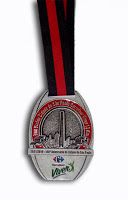
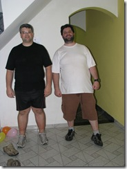
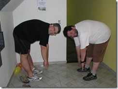
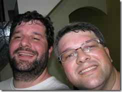

vamo, vamo, vamo…
Posts tagged fotos
Meia maratona de SP
78 years
Nem sei como começar esse post de tão feliz que fiquei, foi uma corrida muito divertida, largamos juntos o Paulo e eu, ele saiu muito rápido eu fui acompanhando logo no 1º km o Paulo estabelece um ritmo e eu sigo em frente sozinho para encarar os próximos 20 km e assim segui fui num ritmo confortável media de 5min por km, só consegui pegar água com 6 km de corrida, mas isso não me atrapalhou com 8 km de prova tomei meu 1º sache de carboidrato e o 2º com 16 km que foi o suficiente para completar bem a prova.
Não sei por que eles oferecem Gatorade nessas competições, vira uma bagunça e a pessoa perder muito tempo pra pegar, deve ter um jeito mais eficiente de fazer isso.
Meu tempo e classificação geral

Fotos e video da chegada.


Vídeo
Consiga um parceiro para treinar junto
58 years
by Claudião
Ontem era um daqueles dias em que a cabe√ßa quer treinar, mas o corpo reclama por ter ficado 6 dias sem correr s√≥ comendo doces. Eu iria treinar de qualquer forma, mas daquele jeito…
Eis que descendo a rua de casa, meu vizinho, o Japa (Fábio Hashimoto) estava na calçada e me disse que seu fosse trotar que ele iria junto.
Mas é claro!
O treino que tinha tudo para ser um fiasco foi muito bom. Sete quilômetros e meio sem repetir o percurso e o Japa, que não fez inscrição em nenhuma corrida porque se dizia despreparado, subia as ladeiras se segurando para não me deixar pra traz.
Combinamos de treinar uma vez por semana juntos. Vamos ver. Treinar com o Japa tem um diferencial ímpar. Como é skatista desde que as rodas de tal equipamento eram quadradas, tem uma flexibilidade nota mil e me obriga a alongar corretamente, e muito. Um verdadeiro personal nesse quesito. Apesar de morarmos na mesma rua, só depois de três meses ensaiando, que a gente conseguiu fazer o tão prometido treino juntos. O Japa é daqueles que não precisa fazer treino específico para poder participar de provas como as que participamos. Além de skatista também usa a bike como meio de transporte até o trabalho. Regularmente ele faz uns treinos ninjas em parques, do tipo exército, musculação livre, sei lá, todos criados por ele mesmo, mas alguns deles até se parecem com os que tenho lido na contrarelógio. Ele disse que não ficará de fora de nenhuma prova de revezamento que porventura participemos.
Estou renovado e finalmente imprimi quatro vias da inscri√ß√£o dos 25km da Maratona. Colei no guarda-roupa, na porta da geladeira e no espelho do banheiro. Outra eu trouxe para cá e colei na capa da agenda. Isso tem de surtir efeito. Rs…
Em tempo: Em 2004 o Japa e eu, corremos numa equipe de 8, na 12ª Maratona Pão de Açúcar. A equipe era formada por grande e especiais amigos. Foi perfeita, mesmo eu tendo participado já depois de engordado e sem treinar, quase morri para correr os 5km iniciais.

A minha amada também participou dando apoio e principalmente se divertindo junto.
Aos amigos queridos da foto: Rodolfo, Carol, Ricardo, Giba, Fábio, além do Kleber, Dri, Paty, Fabricio. Fica o convite para formamos novamente um grande e festiva equipe de revezamento. AMO VOCÊS.
XIII Troféu Cidade de São Paulo Carrefour Viver 10 Km
158 years
by Alecão
in Ex-sedentário
O nome da prova √© tão grande que tiveram que escrever em arco na medalha… üôÇ
 

Tinha prometido que iria correr na sexta feira anterior ao evento, o que não aconteceu por conta da chuva e compromissos, mas na quinta eu treinei (apesar de não ter postado), foi um treino bem cansativo, acho que meu corpo ainda não tinha se recuperado do treino de terça e quarta.
Esta seria minha primeira corrida sozinho, mas meu sogro participou comigo, foi muito legal ter mais um ex-sedentário se juntando ao time. Era a primeira corrida dele.
“Correu” tudo bem, foram 6¬†quil√¥metros¬†e um pouquinho. E essa foi a grande surpresa. Porque, quando vi a marca de 6 quil√¥metros, fiquei procurando o tapete de chegada e nada. Com isso desanimei (como a maioria dos corredores de 6 Km) e terminei a prova andando, a chegada estava a mais de 800 metros a frente da marca de 6 Km. Não entendi porque isso aconteceu. Falando em organiza√ß√£o. Algumas coisas estavam precárias, como o barro que se formou, que quase escorreguei por 2 vezes, em volta do Obelisco. O kit era montado na hora com uma ma√ß√£, um Marathon e a medalha em dezenas de filas que davam em um balcão que prendia a pessoa na hora de sair.
Bem, meu tempo no meu relógio (quando cruzei a marca de 6 Km) foi de 55 minutos, repetindo a performance da corrida de natal. Mas esta corrida, ao invés da de natal, teve muito sol e com várias subidas e descidas da Rubem Berta. Portanto acredito que estou melhor que em dezembro. Bom saber que estou melhorando meu corpo aos poucos e sinto isso no dia-a-dia.
Incrível foi meu sogro, que nunca havia participado de corridas e sempre esteve ao meu lado. Gostou e disse que quer participar da próxima, e pode deixar que eu aviso sim.
Os tempos e colocações oficiais (furados na minha opinião) estão aqui, eu sou o número 8938 e meu sogro é o 9101.
Mais notícias sobre o XIII Troféu Cidade de São Paulo Carrefour Viver 10 Km:

Eu e o Henrique: muita emoção!
128 years
by Claudião

Eu e o Henrique
Eu não brinquei quando disse que abriria meu descanso com uma corrida de 10km. Eu cheguei na praia no sábado às 23:30 horas. Pilhado porque tinha passado as 24 horas anteriores correndo para deixar tudo no esquema para a minha merecida semana de descanso. Só consegui dormir as 03:00 horas e as 06:00 levantei e fomos de Itanhaém para Praia Grande. Mari, Henrique, com sono e eu. Já está virando rotina. Segunda largada de corrida e eu no banheiro químico, mas desta vez só número 1, sem complicação. Pouca gente na corrida e percurso na areia da praia, muito bom. Foi menos fácil do que esperava. As poucas horas de sono, cansaço acumulado e a maresia (estranhei bastante a roupa colada e me sufocando embora tivesse bem mais fácil manter a respiração), todos esses fatores somados, fez com que eu ficasse visualizando o Henrique me esperando de sorriso e braços abertos, para poder me manter no meu rítmo.
Correr naquela areia batida é muito bom, mas os riozinhos para serem pulados e a mesmice da paisagem só foram superados pela festividade do evento. Durante o restante da semana eu não consegui correr nenhum dia na praia por mais de 2km.
Mas na chegada o Henrique me aguardava e cruzamos juntos a linha de chegada com direito a comentário da Locutora. Foi muito emocionante para mim. Um ano atrás eu mal conseguia fazer castelos de areia com o meu filho e agora, cruzando a linha de chegada de uma corrida com ele. Dando a ele o prazer de pegar “a nossa medalha de campeão”. Chorei s√≥ um pouquinho, mas eu encheria um caminhão com a minha emo√ß√£o.
No decorrer da semana dei férias para a dieta e consumi doces que compensaram os que deixei de comer em 2009 todo. Agora é bola pra frente. Dieta e retorno as corridas que só estão me dando prazer. A foto diz tudo.
529 346 CLAUDIO LUCIO DUNDES 36 M0099 525 M EX-SEDENTARIO 01:08:21 01:06:46


Corrida Sesc Santo Amaro
28 years
 Esse ultimo domingo fui correr os 10km do SESC Santo Amaro, prova muito boa no começo estava preocupado porque não treinei na ultima semana mas me senti muito bem durante a prova, durante os primeiros 5km sem sinal de fadiga eu estava 100% quando contornei e estava chegando ao 6Km estava com muito pique e comecei a abrir a passada e completei a prova em 47Min e 45Seg, terminei bem e logo estava recuperado na classificação geral fiquei em 274º num total de 848 inscritos masculino, fiquei muito feliz com o tempo essa semana volto a treinar normal.
Esse ultimo domingo fui correr os 10km do SESC Santo Amaro, prova muito boa no começo estava preocupado porque não treinei na ultima semana mas me senti muito bem durante a prova, durante os primeiros 5km sem sinal de fadiga eu estava 100% quando contornei e estava chegando ao 6Km estava com muito pique e comecei a abrir a passada e completei a prova em 47Min e 45Seg, terminei bem e logo estava recuperado na classificação geral fiquei em 274º num total de 848 inscritos masculino, fiquei muito feliz com o tempo essa semana volto a treinar normal.
Referente ao post feito pelo Claudio sobre os preços da Corpore essa corrida do SESC não deixou nada a desejar em comparação a ela, a camiseta muito boa e a medalha de melhor qualidade e pelo preço de 15 Reais a inscrição é isso mesmo 15 Reais, sou comerciário, mas para quem não é o preço fica sendo 30 Reais o que esta ótimo, eles dão lanchinho no final, isotônico e água igual todas as corridas, parabéns ao SESC pela organização.


Feliz Natal – correndo
28 years
by Alecão
in Ex-sedentário
 Sábado passado eu, Claudio, Thiago e Paula, encaramos a prova de natal da Corpore. Foram 6 km que eu encarei correndo o tempo todo (ou quase).
Sábado passado eu, Claudio, Thiago e Paula, encaramos a prova de natal da Corpore. Foram 6 km que eu encarei correndo o tempo todo (ou quase).
Foi um desafio e tanto, pois não tive uma semana legal, encarando alguns medos interiores, mas a corrida veio e revitalizou meus pensamentos. E que venha os desafios!
Desta vez a minha fam√≠lia estava lá. Minha mulher torcendo por mim e meus filhos vendo o papai correr. Coitados, foram na esperan√ßa de ver o “Show da Turma da M√¥nica” e apenas viram a M√¥nica mandando beijinhos e distribuindo alguns abra√ßos. Posso dizer que isso faz a total diferen√ßa. Motiva saber que eles estarão na linha de chegada esperando a gente.
Largamos, eu, Claudio, Thiago e Paula. No primeiro quil√¥metro eu acompanhei quanto pode, tanto que fizemos em pouco mais de 7 minutos. Mas a partir de ai, percebi que estava puxado e falei para o Claudio que iria diminuir o r√≠timo. Segundo quil√¥metro em 8 minutos e diminuindo… Mesmo porque para chegar no terceiro quil√¥metro, foi necessário encarar a subida que tem ap√≥s o portão do IPT. Nesta subida senti o f√≠gado e sugeri ao Claudio para continuar o r√≠timo enquanto eu caminhava para recuperar, foram 200m e logo chegamos no topo e depois era descida e plano apenas… Não parei e consegui acelerar um pouco no final antes de cruzar a linha de chegada. Muito legal, muito emocionante, muito tudo.
Na chegada, o Claudio disparou e correu até a galera pegando o Henrique e o Maurício no colo. Vi que ele queria me dar o Maurício, mas no estado que estava não iria conseguir segurá-lo e ele acabou cruzando com os dois no colo. Foi bem emocionante.
Thiago e Paula, cruzaram a chegada ao tempo de 45 minutos de prova (aproximadamente).
Eu e o Claudio cruzamos com 55 minutos.
Quero mais!


Cheguei
118 years
by Alecão
in Ex-sedentário
 Pensei muito para escolher o t√≠tulo deste post, mas a única coisa que veio a cabe√ßa foi a palavra “Cheguei”.
Pensei muito para escolher o t√≠tulo deste post, mas a única coisa que veio a cabe√ßa foi a palavra “Cheguei”.
Pois é, cruzei a linha de chegada após 10 quilômetros.
Na largada tudo √© muito emocionante, aquele mar de gente com camisa azul. Depois foi 1, 2, 3 quil√¥metros… cansando… 4… e me deu hiperventila√ß√£o, foi uma sensa√ß√£o muito estranha e continuei andando a passos largos e rápidos, sempre ditados pelo Claudio que me acompanhou o tempo todo, mesmo tendo folego para ir a frente.
Ai por diante foi altern√¢ncia entre corrida e caminhada, mais caminhada que corrida. Meu corpo aguentava mas minha respira√ß√£o não… Parecia ser imposs√≠vel a chegada. No quil√¥metro 7 consegui at√© uma boa arrancada e finalmente¬† CHEGUEI. E tem at√© um v√≠deo para mostrar isso.
A maior alegria foi ter o apoio do Claudio o tempo todo do meu lado, falando, incentivando, torcendo e me envergonhando üôÇ . E o abra√ßo na linha de chegada foi o dos melhores.
Consegui, consegui, consegui, consegui, consegui… eu Cheguei…
Atazanando os tios
38 years
by Alecão
in Ex-sedentário
Logo após o treino de domingo, saindo do parque Chico Bento, ops, Chico Mendes, passamos na casa de nossos tios Edson e Sandra. Só então achamos um fotógrafo (tio Edson) para registrar aquele momento. Aqui vão as fotos tirada no domingo passado (30/08/2009):
Mas o porquê usar o verbo “atazanar” no título? Claudio, convido você a editar este post e explicar…
Usamos, por coincidência, o verbo atazanar do mesmo modo como emprega a acepção 4 do Houaiss:
4 Derivação: sentido figurado.
incomodar, importunar insistentemente; atanazar, atazanar, azucrinar
Ex.: passa o dia a a. o avô
Importunamos e incomodamos nossos tios, tudo com uma insistência que nos é peculiar.
Festejando o níver do Claudio
18 years
by Alecão
in Ex-sedentário
Faz tempo que não coloco meus testemunhos, apenas lembando rapidamente na sexta passada (28/08/2009) eu peguei carona com um colega de trabalho que me deixou no caminho e fui andando (T005) até minha casa, foram 36 minutos andando.
No domingo (30/08/2009) o Claudio veio até minha casa, veio junto com o Henrique, que ficou na bricando com a Olívia e o Maurício (meus filhos) e fomos trotar no parque Chico Mendes que fica em São Caetano do Sul (T006).
Coincidentemente o ínicio dos treinos foi exatamente no dia do meu anivesário (07/08/2009) e só nos econtramos agora, um dia antes do seu aniversário (31/08).
Um dia bem ensolarado, tinham muitas pessoas no parque. Entramos no parque e já começamos a trotar. Primeiro fomos para o bosque que tem no parque e logo ficou pequeno e continuamos trotando por toda extensão do parque. Treinar em dupla tem outra cinemática, foram conversar, assuntos sobre corridas, como estimular mais. Sinto o Claudio um verdadeiro professor no assunto. Já depois dos 40 minutos dei uma parada de 2 minutos, recuperando os batimentos cardíacos… O Claudio continuou, mostrando que já está mais preparado que eu, mais eu alcanço ele com certeza. Cansei…chega e o cronômetro marcava 49 minutos. Isso a marca do Claudio, a minha foi 47 minutos (descontando os 2 minutos de recuperação). Para mim foi uma marca histórica, que espero repetir em breve.
E desta forma foi que comemoramos o aniversário antecipado do Claudião. PARABÉNS PRIMÃO… E no próximo aniversário quero te ver como um Ex-Sedentário!!!
Agora são 20:35 e estou criando coragem para ir para rua‚Ķ Vamos lá Alecão!!!‚Ķ Saia já dessa cadeira.¬† üôÇ
Come√ßou…a doer minha perna
28 years
by Alecão
in Ex-sedentário
Ontem o Claudio me convidou para iniciar a sa√≠da do sedentarismo, fez por um post e depois me ligou refor√ßando o convite. De imiediato eu recusei, era meu aniversário e não sabia se algum parente viria me visitar‚Ķ Ele insistiu uma vez, insistiu duas, na terceira topei. No come√ßo √© necessário um empurrãozinho mesmo. A falta de coragem foi apenas ontem mesmo, hoje já acordei motivado a come√ßar. Pois ele me ligou e disse que viria mesmo. E veio de longe e pegou um puta transito. Pois jantamos uma lasanha deliciosa que a Andrea (minha mulher) preparou, claro que comi apenas um peda√ßo e na sequ√™ncia batemos a foto do ‚ÄúANTES‚Äù, falei para o Claudio para sorrir, não tem nada a ver esta est√≥ria de gordo triste que a m√≠dia prega.
Batemos outra foto esticando o máximo que conseguimos e ficou longe do chão, muito longe.
Saímos, subimos uma ladeirinha perto de casa e atravessamos a avenida e o Claudio vislumbrou um gramado que havia ali. Ficou encantado e eu sem entender e ele logo me explica que por conta do excesso de peso, a grama ajudaria a não afetar as articulações. Cronometro acionado e começamos a trotar. Logo ele me controla: “passos mais curtos, passos mais curtos” e fui entendendo o que vinha ser o runyoga (nome difícil de acostumar). O Claudio foi falando e me explicando como deve ser o começo e como ir aumentando conforme o tempo passa.
 A sensação é do dever cumprido e de ansiedade pela longa jornada que vem por ai, deu para soar bastante, ficar bem vermelho, meus bícepes estão doendo nesse momento e sinto a parte traseira da coxa latejando. Primeiro desafio cumprido, foi oficializado a abertura com direito a foto.
E para fechar com chave de ouro, depois teve os parab√©ns com bolo de chocolate que juro que comi apenas um peda√ßo. üôÇ
.jpg "DSC01820 (1024x576)")
.jpg "DSC01847 (1024x576)")
.jpg "DSC01879 (1024x576)")
.jpg "DSC01952 (1024x576)")
.jpg "DSCN5692 (1024x768)")
.jpg "IMG_7304 (1024x768)")


{kind=link}
{kind=link}
{kind=link}
{kind=link}
{kind=link}
{kind=link}
{kind=link}
{kind=link}
{kind=link}
√öltimos comentários